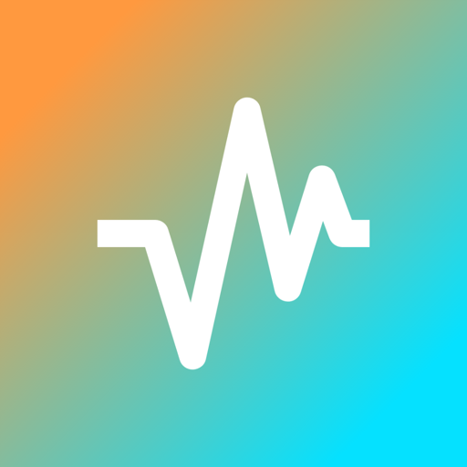

Stations included out of the box


And more — or add any station you like.

No subscription, no account. Just your favourite radio stations on Mac — and what's playing right now.
Live artist and track info from the stream, with album artwork fetched automatically. Appears in Control Center too.
Start with a curated selection of stations from the Netherlands, Belgium, France, Germany, and the UK — or add any stream by URL.
Play, pause, and skip using your keyboard. Rrradio integrates natively with macOS so you never have to switch apps.
Reconnects automatically if a stream drops. Remembers your last station so the music picks up right where you left off.
No sign-up, no subscription, no tracking. Download the app and start listening. That's it.
Add any internet radio stream, give it a custom name and logo, and reorder your list however you like.
And more — or add any station you like.